将大优化问题分解为多个小优化问题来求解
0x01 SVM
实现算法：序列最小优化（SMO）
支持向量：离分割超平面最近的那些点
优点：
- 范化错误率低
- 计算开销不大
- 结果易解释
缺点：
- 对参数调节和核函数的选择敏感
- 原始分类器需要修改才能处理多分类问题
适用数据类型：
- 数值型
- 标称型
0x02 SMO
将大优化问题分解为多个小优化问题来求解
目标是求出一系列alpha和b，一旦求出了这些alpha，就很容易计算出权重向量w并得到分隔超平面
工作原理是:每次循环中选择两个alpha进行优化处理。一旦找到一对合适的alpha，那么就增大其中一个同时减小另一个
- 简化版实现
def selectJrand(i, m):
'''
在某个区间范围内随机选择一个整数
:param i: 第i个alpha的下标
:param m: 所有alpha的数目
:return:
'''
j=i
while (j==i):
j = int(random.uniform(0, m))
return j
def clipAlpha(aj, H, L):
'''
用于调整大于H或小于L的alpha值
:param aj:
:param H:
:param L:
:return:
'''
if aj > H:
aj = H
if L > aj:
aj = L
return aj
def smoSimple(dataMatIn, classLabels, C, toler, maxIter):
'''
:param dataMatIn:数据集
:param classLabels:类别标签
:param C:常数C
:param toler:容错率
:param maxIter:退出前的最大循环次数
:return:
'''
dataMatrix = mat(dataMatIn)
labelMat = mat(classLabels).transpose()
b = 0
m, n = shape(dataMatrix)
alphas = mat(zeros((m, 1)))
iter = 0 #记录循环次数
while (iter < maxIter):
alphaPairsChanged = 0 #用于记录alpha是否优化
for i in range(m):
fXi = float(multiply(alphas, labelMat).T*(dataMatrix*dataMatrix[i, :].T)) + b #预测的类别
Ei = fXi - float(labelMat[i])#预测和实际的误差
#如果误差过大，则进行优化
if ((labelMat[i]*Ei < -toler) and (alphas[i] < C)) or ((labelMat[i]*Ei > toler) and (alphas[i] > 0)):
j = selectJrand(i, m) #随机选择第二个alpha值
fXj = float(multiply(alphas, labelMat).T*(dataMatrix*dataMatrix[j, :].T)) + b #预测类别
Ej = fXj - float(labelMat[j]) #误差
alphaIold = alphas[i].copy()
alphaJold = alphas[j].copy()
#计算L和H
if (labelMat[i] != labelMat[j]):
L = max(0, alphas[j] - alphas[i])
H = min(C, C + alphas[j] - alphas[i])
else:
L = max(0, alphas[j] + alphas[i] - C)
H = min(C, alphas[j] + alphas[i])
if L==H:
print("L==H")
continue
eta = 2.0 * dataMatrix[i, :]*dataMatrix[j, :].T - dataMatrix[i, :]*dataMatrix[i, :].T - dataMatrix[j, :]*dataMatrix[j, :].T #最优修改量
if eta >= 0:
print("eta>=0")
continue
alphas[j] -= labelMat[j]*(Ei - Ej)/eta
alphas[j] = clipAlpha(alphas[j], H, L)
if (abs(alphas[j] - alphaJold) < 0.00001):
print("j not moving enough")
continue
alphas[i] += labelMat[j]*labelMat[i]*(alphaJold - alphas[j])#修改i，修改量和j相同，方向相反
#设置常数项
b1 = b - Ei - labelMat[i]*(alphas[i]-alphaIold)*dataMatrix[i, :]*dataMatrix[i, :].T - labelMat[j]*(alphas[j]-alphaJold)*dataMatrix[i, :]*dataMatrix[j, :].T
b2 = b - Ej - labelMat[i]*(alphas[i]-alphaIold)*dataMatrix[i, :]*dataMatrix[j, :].T - labelMat[j]*(alphas[j]-alphaJold)*dataMatrix[j, :]*dataMatrix[j, :].T
if (0 < alphas[i]) and (C > alphas[i]):
b = b1
elif (0 < alphas[j]) and (C > alphas[j]):
b = b2
else:
b = (b1 + b2)/2.0
alphaPairsChanged += 1
print("iter: %d i:%d, pairs changed %d" % (iter, i, alphaPairsChanged))
if (alphaPairsChanged == 0):
iter += 1
else:
iter = 0
print("iteration number: %d" % iter)
return b, alphas
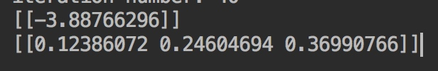
找出哪些点是支持向量
for i in range(100):
if alphas[i] > 0.0:
print(dateArr[i], labelArr[i])
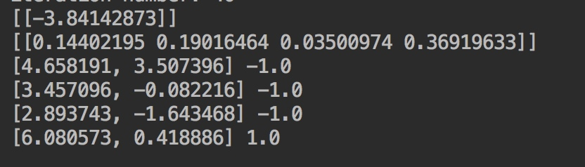
- 完整版实现
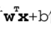
class optStruct:
def __init__(self, dataMatIn, classLabels, C, toler, kTup): # Initialize the structure with the parameters
self.X = dataMatIn
self.labelMat = classLabels
self.C = C
self.tol = toler
self.m = shape(dataMatIn)[0]
self.alphas = mat(zeros((self.m, 1)))
self.b = 0
self.eCache = mat(zeros((self.m, 2))) #first column is valid flag
self.K = mat(zeros((self.m, self.m)))
for i in range(self.m):
self.K[:, i] = kernelTrans(self.X, self.X[i, :], kTup)
def calcEk(oS, k):
'''
计算E值并返回
:param oS:
:param k:
:return:
'''
fXk = float(multiply(oS.alphas, oS.labelMat).T*oS.K[:, k] + oS.b)
Ek = fXk - float(oS.labelMat[k])
return Ek
def selectJ(i, oS, Ei):
'''
选择第二个alpha
:param i:
:param oS:
:param Ei:
:return:
'''
maxK = -1
maxDeltaE = 0
Ej = 0
oS.eCache[i] = [1, Ei]
validEcacheList = nonzero(oS.eCache[:, 0].A)[0]
if (len(validEcacheList)) > 1:
for k in validEcacheList:
if k == i:
continue
Ek = calcEk(oS, k)
deltaE = abs(Ei - Ek)
if (deltaE > maxDeltaE):
maxK = k
maxDeltaE = deltaE
Ej = Ek
return maxK, Ej
else:
j = selectJrand(i, oS.m)
Ej = calcEk(oS, j)
return j, Ej
def updateEk(oS, k):
'''
计算误差值并存入缓存
:param oS:
:param k:
:return:
'''
Ek = calcEk(oS, k)
oS.eCache[k] = [1, Ek]
def innerL(i, oS):
'''
优化过程
:param i:
:param oS:
:return:
'''
Ei = calcEk(oS, i)
if ((oS.labelMat[i]*Ei < -oS.tol) and (oS.alphas[i] < oS.C)) or ((oS.labelMat[i]*Ei > oS.tol) and (oS.alphas[i] > 0)):
j, Ej = selectJ(i, oS, Ei)
alphaIold = oS.alphas[i].copy(); alphaJold = oS.alphas[j].copy()
if (oS.labelMat[i] != oS.labelMat[j]):
L = max(0, oS.alphas[j] - oS.alphas[i])
H = min(oS.C, oS.C + oS.alphas[j] - oS.alphas[i])
else:
L = max(0, oS.alphas[j] + oS.alphas[i] - oS.C)
H = min(oS.C, oS.alphas[j] + oS.alphas[i])
if L==H:
print("L==H")
return 0
eta = 2.0 * oS.K[i, j] - oS.K[i, i] - oS.K[j, j]
if eta >= 0:
print("eta>=0")
return 0
oS.alphas[j] -= oS.labelMat[j]*(Ei - Ej)/eta
oS.alphas[j] = clipAlpha(oS.alphas[j], H, L)
updateEk(oS, j)
if (abs(oS.alphas[j] - alphaJold) < 0.00001):
print("j not moving enough")
return 0
oS.alphas[i] += oS.labelMat[j]*oS.labelMat[i]*(alphaJold - oS.alphas[j])
updateEk(oS, i)
b1 = oS.b - Ei - oS.labelMat[i]*(oS.alphas[i]-alphaIold)*oS.K[i, i] - oS.labelMat[j]*(oS.alphas[j]-alphaJold)*oS.K[i, j]
b2 = oS.b - Ej - oS.labelMat[i]*(oS.alphas[i]-alphaIold)*oS.K[i, j] - oS.labelMat[j]*(oS.alphas[j]-alphaJold)*oS.K[j, j]
if (0 < oS.alphas[i]) and (oS.C > oS.alphas[i]):
oS.b = b1
elif (0 < oS.alphas[j]) and (oS.C > oS.alphas[j]):
oS.b = b2
else:
oS.b = (b1 + b2)/2.0
return 1
else:
return 0
def smoP(dataMatIn, classLabels, C, toler, maxIter,kTup=('lin', 0)):
'''
完整的SMO外循环
:param dataMatIn:
:param classLabels:
:param C:
:param toler:
:param maxIter:
:param kTup:
:return:
'''
oS = optStruct(mat(dataMatIn), mat(classLabels).transpose(), C, toler, kTup)
iter = 0
entireSet = True
alphaPairsChanged = 0
while (iter < maxIter) and ((alphaPairsChanged > 0) or (entireSet)):
alphaPairsChanged = 0
if entireSet:
for i in range(oS.m):
alphaPairsChanged += innerL(i,oS)
print("fullSet, iter: %d i:%d, pairs changed %d" % (iter, i, alphaPairsChanged))
iter += 1
else:
nonBoundIs = nonzero((oS.alphas.A > 0) * (oS.alphas.A < C))[0]
for i in nonBoundIs:
alphaPairsChanged += innerL(i, oS)
print("non-bound, iter: %d i:%d, pairs changed %d" % (iter, i, alphaPairsChanged))
iter += 1
if entireSet:
entireSet = False
elif (alphaPairsChanged == 0):
entireSet = True
print("iteration number: %d" % iter)
return oS.b, oS.alphas
def calcWs(alphas, dataArr, classLabels):
'''
利用计算出的alpha进行分类
:param alphas:
:param dataArr:
:param classLabels:
:return:
'''
X = mat(dataArr)
labelMat = mat(classLabels).transpose()
m, n = shape(X)
w = zeros((n, 1))
for i in range(m):
w += multiply(alphas[i]*labelMat[i], X[i, :].T)
return w
for i in range(100):
if alphas[i] > 0.0:
print(dateArr[i], labelArr[i])
ws = calcWs(alphas, dateArr, labelArr)
print(ws)
datmat = mat(dateArr)
print(datmat[0]*mat(ws) + b)
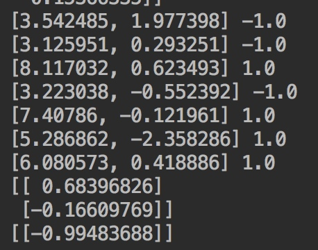
最后一行为测试结果，小于0属于-1类，大于0属于1类，等于0属于-1类
0x03 kernel
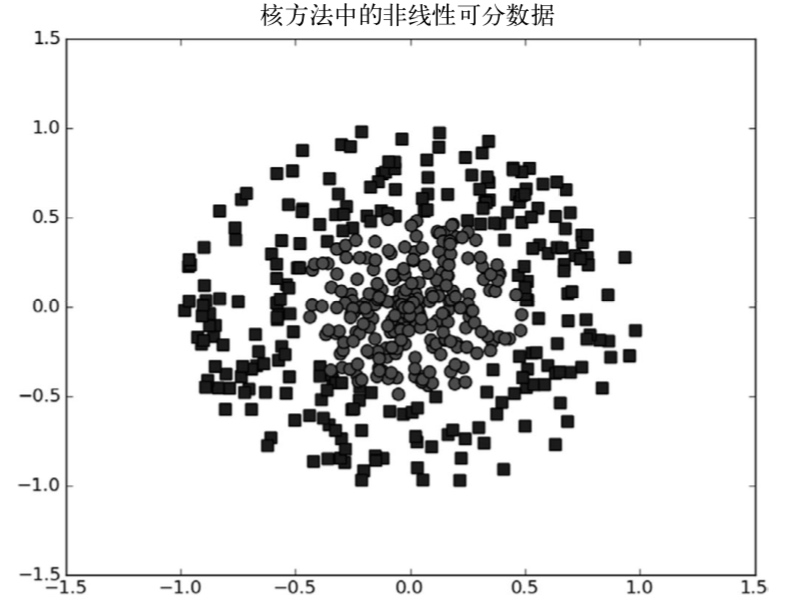
- 将数据映射到高维空间
将数据从一个特征空间转换到另一个特征空间
映射会将低维特征空间映射到高维空间
- 径向基核函数
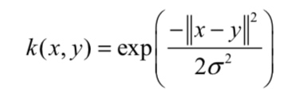
def kernelTrans(X, A, kTup):
'''
核函数
:param X:
:param A:
:param kTup:包含核函数信息的元组
:return:
'''
m, n = shape(X)
K = mat(zeros((m, 1)))
if kTup[0]=='lin':
K = X * A.T
elif kTup[0]=='rbf':
for j in range(m):
deltaRow = X[j, :] - A
K[j] = deltaRow*deltaRow.T
K = exp(K/(-1*kTup[1]**2))
else:
raise NameError('Houston We Have a Problem -- That Kernel is not recognized')
return K
测试
def testRbf(k1=1.3):
dataArr,labelArr = loadDataSet('testSetRBF.txt')
b,alphas = smoP(dataArr, labelArr, 200, 0.0001, 10000, ('rbf', k1))
datMat=mat(dataArr)
labelMat = mat(labelArr).transpose()
svInd=nonzero(alphas.A>0)[0]
sVs=datMat[svInd]
labelSV = labelMat[svInd]
print("there are %d Support Vectors" % shape(sVs)[0])
m, n = shape(datMat)
errorCount = 0
for i in range(m):
kernelEval = kernelTrans(sVs, datMat[i, :], ('rbf', k1))
predict = kernelEval.T * multiply(labelSV, alphas[svInd]) + b
if sign(predict) != sign(labelArr[i]):
errorCount += 1
print("the training error rate is: %f" % (float(errorCount)/m))
dataArr, labelArr = loadDataSet('testSetRBF2.txt')
errorCount = 0
datMat=mat(dataArr)
labelMat = mat(labelArr).transpose()
m,n = shape(datMat)
for i in range(m):
kernelEval = kernelTrans(sVs, datMat[i, :], ('rbf', k1))
predict = kernelEval.T * multiply(labelSV, alphas[svInd]) + b
if sign(predict) != sign(labelArr[i]):
errorCount += 1
print("the test error rate is: %f" % (float(errorCount)/m))
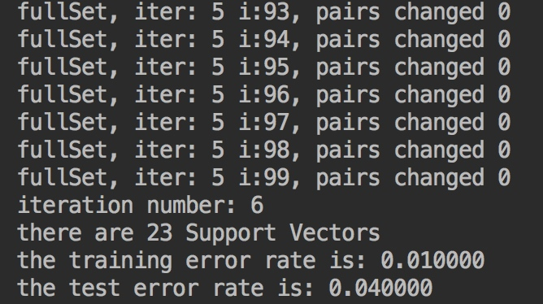
0x04 实例1
基于SVM的手写数字识别
def testDigits(kTup=('rbf', 10)):
dataArr,labelArr = loadImages('../Ch02/digits/trainingDigits')
b,alphas = smoP(dataArr, labelArr, 200, 0.0001, 10000, kTup)
datMat=mat(dataArr)
labelMat = mat(labelArr).transpose()
svInd=nonzero(alphas.A > 0)[0]
sVs=datMat[svInd]
labelSV = labelMat[svInd]
print("there are %d Support Vectors" % shape(sVs)[0])
m, n = shape(datMat)
errorCount = 0
for i in range(m):
kernelEval = kernelTrans(sVs, datMat[i, :], kTup)
predict = kernelEval.T * multiply(labelSV, alphas[svInd]) + b
if sign(predict) != sign(labelArr[i]):
errorCount += 1
print("the training error rate is: %f" % (float(errorCount)/m))
dataArr, labelArr = loadImages('testDigits')
errorCount = 0
datMat=mat(dataArr)
labelMat = mat(labelArr).transpose()
m, n = shape(datMat)
for i in range(m):
kernelEval = kernelTrans(sVs, datMat[i, :], kTup)
predict=kernelEval.T * multiply(labelSV, alphas[svInd]) + b
if sign(predict)!=sign(labelArr[i]):
errorCount += 1
print("the test error rate is: %f" % (float(errorCount)/m))
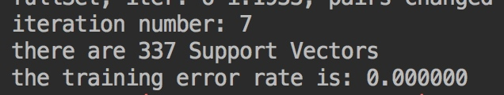
0x05 实例2
XSS Detection
0x01 数据
在github上看到https://github.com/SparkSharly/DL_for_xss 这个项目，感觉不错，学习一下，数据集项目中已经附带，就直接使用了
- eg. normal_examples.csv （20w+取部分）
- eg. xssed.csv （4W+取部分）
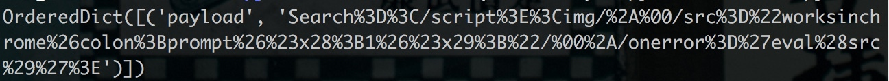
0x02 分词
def GeneSeg(payload):
#数字泛化为"0"
payload=payload.lower()
payload=unquote(unquote(payload))
payload,num=re.subn(r'\d+',"0",payload)
#替换url为”http://u
payload,num=re.subn(r'(http|https)://[a-zA-Z0-9\.@&/#!#\?]+', "http://u", payload)
#分词
r = '''
(?x)[\w\.]+?\(
|\)
|"\w+?"
|'\w+?'
|http://\w
|</\w+>
|<\w+>
|<\w+
|\w+=
|>
|[\w\.]+
'''
return nltk.regexp_tokenize(payload, r)
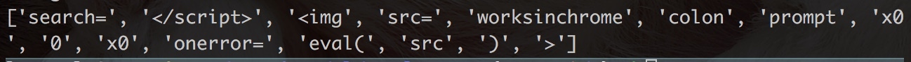
0x03 特征
- 建立xss语义模型，构建词汇表
统计高频出现的300词构建词表
words=[]
datas=[]
with open("data/xssed.csv","r",encoding="utf-8") as f:
reader=csv.DictReader(f,fieldnames=["payload"])
for row in reader:
payload=row["payload"]
word=GeneSeg(payload)
datas.append(word)
words+=word
#构建数据集
def build_dataset(datas,words):
count=[["UNK",-1]]
counter=Counter(words)
count.extend(counter.most_common(vocabulary_size-1))
#print(count)
vocabulary=[c[0] for c in count]
#print(vocabulary)
data_set=[]
for data in datas:
d_set=[]
for word in data:
if word in vocabulary:
d_set.append(word)
else:
d_set.append("UNK")
count[0][1]+=1
data_set.append(d_set)
print(data_set)
- word2vec建模
model=Word2Vec(data_set,size=embedding_size,window=skip_window,negative=num_sampled,iter=num_iter)
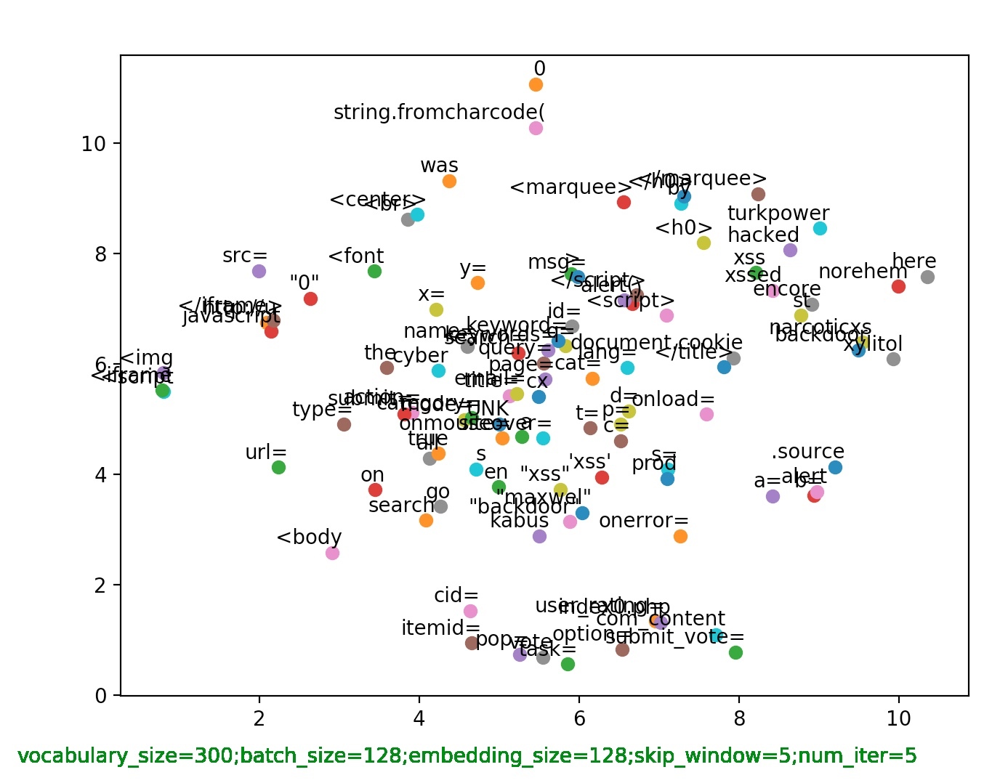
空间维度设置为32维
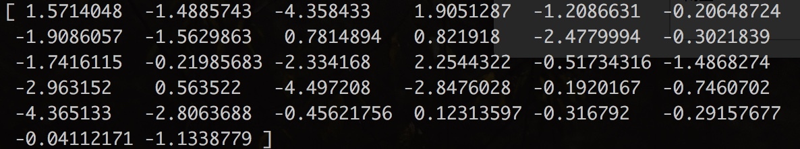
查看建模结果，与</script>最语义最相近的词
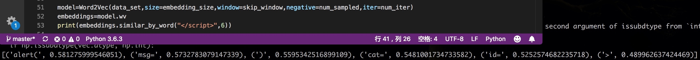
- 数据处理
def pre_process():
with open(vec_dir,"rb") as f :
word2vec=pickle.load(f)
#词表（'UNK': 0, '0': 1）
dictionary=word2vec["dictionary"]
#维度值
embeddings=word2vec["embeddings"]
#反向词表（num和word调换，0: 'UNK', 1: '0'）
reverse_dictionary = word2vec["reverse_dictionary"]
xssed_data=[]
normal_data=[]
with open("data/xssed.csv","r",encoding="utf-8") as f:
reader = csv.DictReader(f, fieldnames=["payload"])
for row in reader:
payload=row["payload"]
#分词['search=', '</script>', '<img', 'src=', 'worksinchrome', 'colon', 'prompt', 'x0', '0', 'x0', 'onerror=', 'eval(', 'src', ')', '>']
word=GeneSeg(payload)
xssed_data.append(word)
with open("data/normal_examples.csv","r",encoding="utf-8") as f:
reader = csv.DictReader(f, fieldnames=["payload"])
for row in reader:
payload=row["payload"]
word=GeneSeg(payload)
normal_data.append(word)
xssed_num=len(xssed_data)
normal_num=len(normal_data)
#生成标签[1, 1, 1, 1, 1, 1, 1, 1, 1, 1, 1]
xssed_labels=[1]*xssed_num
normal_labels=[0]*normal_num
datas=xssed_data+normal_data
labels=xssed_labels+normal_labels
def to_index(data):
d_index=[]
for word in data:
if word in dictionary.keys():
d_index.append(dictionary[word])
else:
d_index.append(dictionary["UNK"])
return d_index
#数据转换[23, 5, 34, 14, 0, 0, 0, 0, 1, 0, 81, 0, 0, 3, 2]
datas_index=[to_index(data) for data in datas]
#长度不足maxlen的用-1在前端填充
'''
[[ -1 -1 -1 ... 0 3 2]
[ -1 -1 -1 ... 10 17 1]
[ -1 -1 -1 ... 150 0 71]
...
[ -1 -1 -1 ... 11 2 55]
[ -1 -1 -1 ... 5 24 1]
[ -1 -1 -1 ... 1 3 5]]
'''
datas_index=pad_sequences(datas_index,value=-1,maxlen=maxlen)
#从有序列表中选k个作为一个片段返回，eg.[7, 6, 3, 2, 5, 8, 0, 1, 10, 4, 9]
rand=random.sample(range(len(datas_index)),len(datas_index))
#数据简单随机排序
datas=[datas_index[index] for index in rand]
labels=[labels[index] for index in rand]
datas_embed=[]
#获取UNK的维度，本例中是32
dims=len(embeddings["UNK"])
n=0
for data in datas:
data_embed = []
for d in data:
if d != -1:
#如果不是填充数据，就把真实纬度值替换
data_embed.extend(embeddings[reverse_dictionary[d]])
else:
data_embed.extend([0.0] * dims)
datas_embed.append(data_embed)
'''
[0.0, 0.0, 0.0, 0.0, 0.0, 0.0, 0.0, 0.0, 0.0, 0.0, 0.0, 0.0, 0.0, 0.0, 0.0, 0.0, 0.0, 0.0,
0.0, 0.0, 0.0, 0.0, 0.0, 0.0, 0.0, 0.0, 0.0, 0.0, 0.0, 0.0, 0.0, 0.0, 0.0, 0.0, 0.0, 0.0,
0.0, 0.0, 0.0, 0.0, 0.0, 0.0, 0.0, 0.0, 0.0,··· -0.5644003, 0.41219762, -1.2313833, -1.3566964,
-0.74316794, -1.2668883, 1.0586963, 1.5969143, 0.21956278, 1.1538218, -0.35007623, 0.21183407,
-0.53830135, 1.7361579, -0.08175806, -1.1915175, -1.7790002, -1.1044971, 0.40857738]
'''
n+=1
if n%10000 ==0:
print(n)
#七成训练，三成测试
train_datas,test_datas,train_labels,test_labels=train_test_split(datas_embed,labels,test_size=0.3)
return train_datas,test_datas,train_labels,test_labels
0x04 SVM训练
通过SVM算法进行模型训练
train_datas, train_labels=pre_process()
print("Start Train Job! ")
start = time.time()
model=LinearSVC()
model = SVC(C=1.0, kernel="linear")
model.fit(train_datas,train_labels)
model.save(model_dir)
end = time.time()
print("Over train job in %f s" % (end - start))
print("Start Test Job!")
start=time.time()
pre=model.predict(test_datas)
end=time.time()
print("Over test job in %s s"%(end-start))
precision = precision_score(test_labels, pre)
recall = recall_score(test_labels, pre)
print("Precision score is :", precision)
print("Recall score is :", recall)
with open(model_dir,"wb") as f:
pickle.dump(model,f,protocol=2)
print("wirte to ",model_dir)
精确率和召回率：
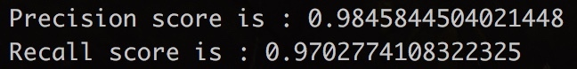
参考
[1] https://www.manning.com/books/machine-learning-in-action
本文由 蓝骨
创作，采用 知识共享署名4.0 国际许可协议进行许可
本站文章除注明转载/出处外，均为本站原创或翻译，转载前请务必署名
最后编辑时间为: 2018-09-24T23:23:23+08:00